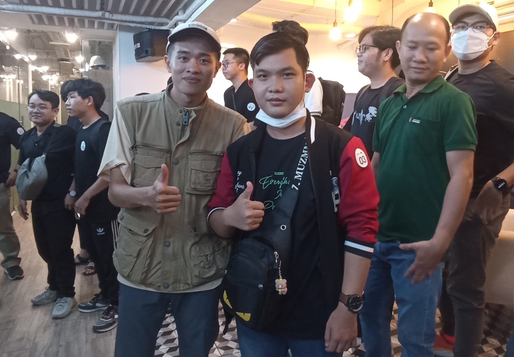
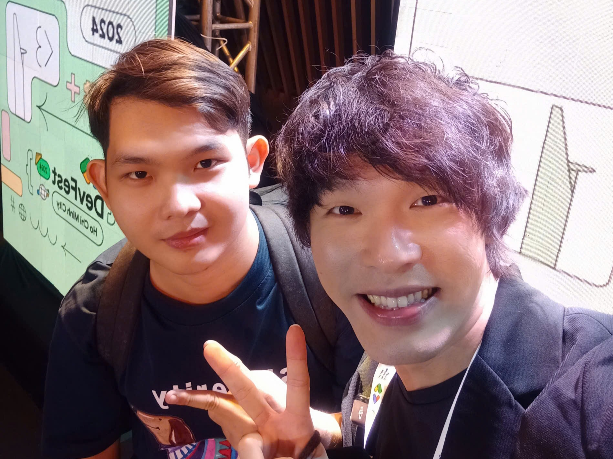
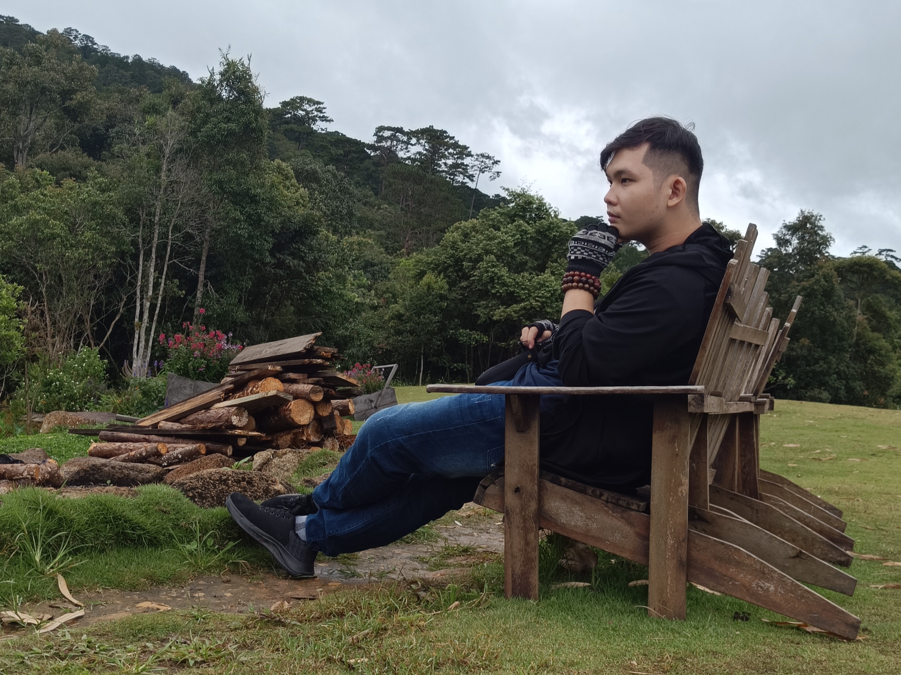

Each stage of life requires a new version of yourself
Cuộc sống không phải là một con đường thẳng — mà là hành trình của sự thay đổi và trưởng thành liên tục. Khi chúng ta lớn lên, trách nhiệm, ước mơ và thử thách cũng thay đổi theo. Con người của bạn 5 năm trước có thể hoàn hảo cho cuộc sống khi đó, nhưng chưa chắc đã phù hợp với mục tiêu hiện tại. Để tiến về phía trước, ta phải sẵn sàng “lột xác” và trở thành một phiên bản mới của chính mình.
Thay đổi hiếm khi dễ dàng. Nó đòi hỏi ta từ bỏ những thói quen cũ, nhìn lại niềm tin của bản thân, và đôi khi phải nói lời tạm biệt với những điều từng thân thuộc. Nhưng chính quá trình đó lại giúp chúng ta trưởng thành và hiểu rõ bản thân hơn.
Tuổi trẻ – Người khám phá và học hỏi
Khi còn trẻ, thế giới như một vùng đất rộng mở. Đây là thời điểm của sự tò mò, dũng cảm và khám phá. Sai lầm không phải là thất bại — mà là nền tảng của sự trưởng thành. Ở tuổi trẻ, phiên bản tốt nhất của bạn là người dám mơ ước, dám thử và không ngừng học hỏi.
- Bạn dám vượt qua giới hạn của bản thân.
- Bạn vấp ngã, nhưng luôn đứng dậy mạnh mẽ hơn.
- Bạn tích lũy những trải nghiệm quý giá, hình thành nên sự khôn ngoan sau này.
“Hãy dũng cảm. Đừng để nỗi sợ thất bại ngăn bạn khám phá chính mình.”
Tuổi trưởng thành – Người xây dựng và theo đuổi ước mơ
Khi bước vào giai đoạn trưởng thành, cuộc sống đòi hỏi ta tập trung hơn. Những giấc mơ dần phải gắn liền với thực tế. Ta bắt đầu xây dựng sự nghiệp, tìm kiếm sự độc lập tài chính và định hình tương lai. Phiên bản bạn cần lúc này là người kiên định, có kỷ luật và tư duy dài hạn.
- Bạn học cách làm việc chăm chỉ dù động lực có lúc cạn dần.
- Bạn chịu trách nhiệm cho quyết định của mình.
- Bạn xác định giá trị bản thân và xây dựng cuộc sống dựa trên nó.
“Hãy kiên trì và ổn định. Biến nhiệt huyết của tuổi trẻ thành hành động cụ thể.”
Trung niên – Người cân bằng và chiêm nghiệm

Ở một thời điểm nào đó, nhiều người nhận ra rằng thành công thôi là chưa đủ. Bạn có thể có công việc ổn định, gia đình, hay những thành tựu cá nhân, nhưng bắt đầu tự hỏi: “Điều gì thực sự khiến mình hạnh phúc?” Phiên bản bạn cần bây giờ là người biết cân bằng, bình tĩnh và thấu hiểu.
- Bạn ưu tiên sức khỏe và tinh thần hơn mọi thứ khác.
- Bạn học cách cân bằng giữa công việc, gia đình và bản thân.
- Bạn dành thời gian cho những điều thực sự ý nghĩa.
“Thành công thật sự không nằm ở việc leo cao, mà ở việc tìm thấy sự bình an trong tâm hồn.”
Tuổi xế chiều – Người chia sẻ và để lại dấu ấn
Khi đi qua nhiều năm tháng, ta nhận ra giá trị lớn nhất không nằm ở thành tích, mà là ở tấm lòng và sự ảnh hưởng. Đây là lúc ta có thể chia sẻ kinh nghiệm, yêu thương và hướng dẫn thế hệ trẻ. Phiên bản tốt nhất của bạn bây giờ là người bao dung, thấu hiểu và sẵn sàng cho đi.
- Bạn trở thành người truyền cảm hứng cho người trẻ.
- Bạn chia sẻ kiến thức và bài học cuộc sống quý giá.
- Bạn trân trọng các mối quan hệ và biết ơn cuộc đời.
“Giá trị lớn nhất của con người không nằm ở những gì ta đạt được, mà ở những gì ta trao đi.”
Vì sao cần thay đổi bản thân?

Cuộc sống luôn vận động. Không ai có thể mãi là phiên bản cũ mà mong đợi kết quả mới. Mỗi giai đoạn đòi hỏi kỹ năng, tư duy và ước mơ khác nhau. Việc thay đổi không phải là yếu đuối, mà là minh chứng cho sự trưởng thành và dám tiến bước.
- Người học trò cần trở thành người chuyên nghiệp.
- Người mơ mộng cần trở thành người hành động.
- Người đạt được thành công cần học cách cân bằng.
- Và người tìm kiếm sự bình yên sẽ trở thành người dẫn dắt.
“Mỗi lần bạn thay đổi, bạn đang tiến gần hơn đến phiên bản hoàn thiện nhất của chính mình.”
Lời nhắc nhẹ nhàng

Đừng sợ thay đổi. Hãy sợ việc đứng yên khi cuộc sống đang gọi bạn tiến lên. Bạn không cần phải biết tất cả ngay lúc này — chỉ cần đủ can đảm để học hỏi, thích nghi, và phát triển.
“Mỗi bước nhỏ trong hành trình hôm nay sẽ dẫn bạn đến phiên bản tốt đẹp hơn của ngày mai.”